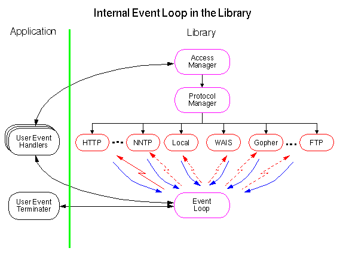

Libwww is not posix thread safe but it uses a 'pseudo-thread' model based on non-blocking sockets and interleaved IO. The Event class defines any event manager to be used by libwww for handling events. Work has been going on in making libwww posix thread safe but the results have always been that we loose a lot of performance.
There is no default event loop registered by libwww, but there is a sample implementation using pseudo threads (non-blocking sockets and interlaced I/O). This can be replaced with another eventloop if you like. If you are using the libwww pseudo threads on Unix then an event is when the select() system call returns a notification on a socket descriptor, but it may as well be an asynchronous event from the windows manager etc. If your application is not using anything but traditional blocking sockets then you do not need an event manager at all. In that case, libwww will block on any socket or system call until the process can proceed.
The libwww event manager
interface is very simple as it consists of registering a
socket descriptor, the location in the program, and the
current state when an operation (for example read)
would block. When the event manager at a later point in time gets a
notification that the socket has become ready, it can then call libwww
with the state saved from the registration and libwww can continue.
Second, libwww must be able to unregister a socket when it is not anymore in a state where it can block. Only in case the application wishes to use non-blocking sockets it should register methods for handling the registration process as described below.
Libwww normally handles the creation and termination of its internal threads without any interaction required by the application. The thread model is based on call back functions of which at least one user event handler and a event terminator must must be supplied by the application. However, the application is free to register as many additional user event handlers as it wants.

select() function in libwww
event loop is blocking even though the sockets are non-blocking. This means
that if no actions are pending on any of the registered sockets then the
application will block in the select() call. However, in order
to avoid sockets hanging around forever, a timeout is provided so that hanging
threads can be terminated.
Often an event handler needs to return information about a change of state as a result of an action executed by the handler, for example if a new request is issued, a ongoing request is interrupted, the application is to terminated etc. This information can be handed back to libwww using the return values of the call back function.
A requst can be be terminated prematurely by either a timeout or an abort of the operation. Both cases can be handled by libwww and be adjusted to the desire of the user and or application.